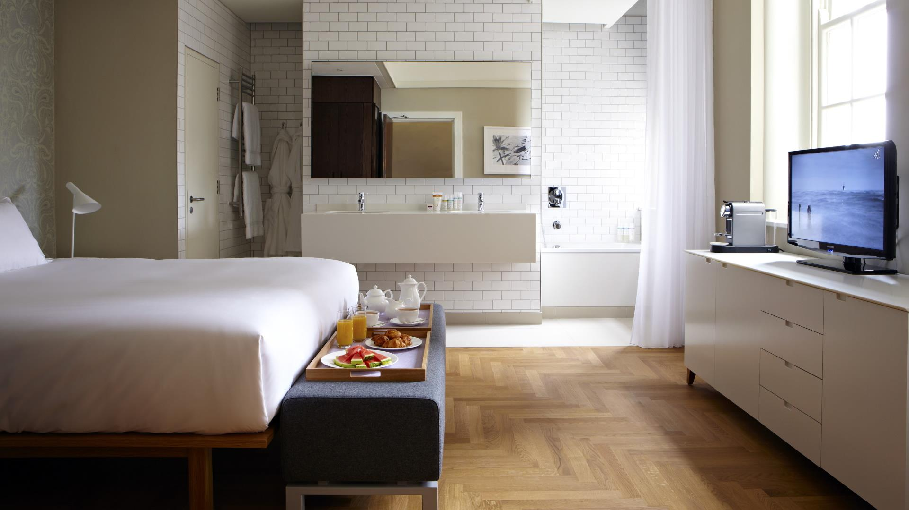
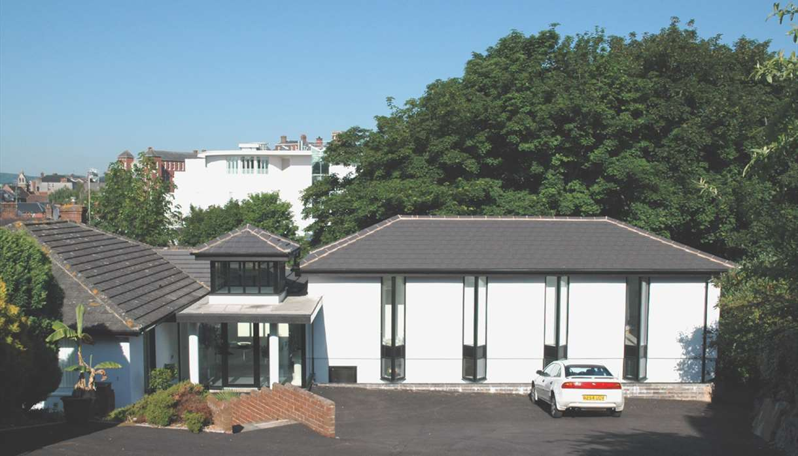
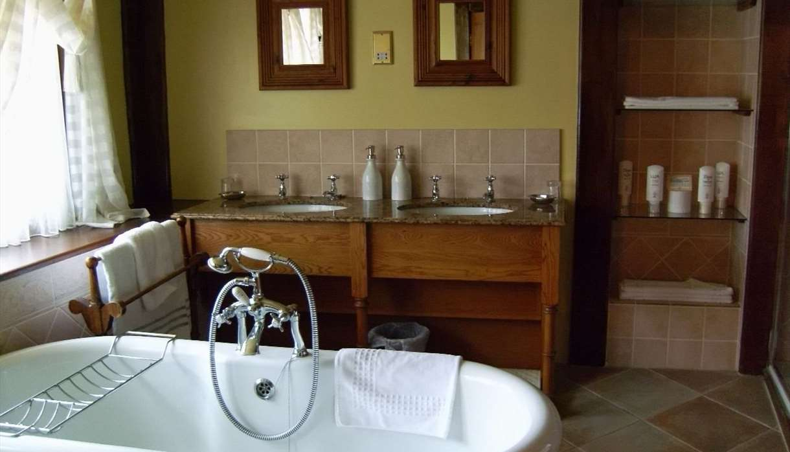

PLACES TO STAY
Whether in search of a special interest break or a relaxing get away, choose from period hotels in the city centre, friendly guesthouses or nearby rural retreats.
If you are looking for a luxury break, Exeter has a great selection of top quality hotels, or if you prefer to stay somewhere smaller and more intimate, there are plenty of conveniently located b&bs and guest houses to choose from.
If you are on a budget, you may choose to stay in one of Exeter's campus accommodation, hostels or camping and caravanning sites. Exeter also has a good selection of self catering accommodation, from luxury city apartments to rural cottages on the city outskirts, or if you'd prefer a short break in a self-catering property, search our selection of fantastic serviced apartments.

HOTELS
- CLAREMONT
- 42 Denmark Road, Exeter, Devon, EX1 1SE
- Tel: 01392 274699
- -
- About
- Modern purpose-built accommodation set in a quiet and peaceful wooded area with access to lawned garden. Situated a few minutes walk from Exeter city centre. All rooms have underfloor heating.

- Cofton Holidays
- Cofton Holidays, Starcross, Dawlish, Devon, EX6 8RP
- Tel: 01626 890111
- -
- About
- Cofton Holidays is a 5-star holiday park set in a peaceful valley offering eighty acres of Devon countryside to explore. With rolling meadows, open parkland, mature woods and fishing lakes within the grounds, you’ll struggle to find a more beautiful setting for your holiday.

- The White Hart
- 66 South Street, Exeter, Devon, EX1 1EE
- Tel: 01392 279897
- -
- About
- The White Hart boasts 55 newly refurbished en-suite bedrooms. All are non-smoking and inclusive of full English breakfast and free parking. 40 rooms are situated at the rear of the hotel and 15 rooms are situated in the original part of the hotel. Please note there are no ground floor rooms. The hotel is situated in the busy City Centre of Exeter within the old city walls. It’s ideally situated to enjoy all the city has to offer, from its famous Gothic Cathedral to the Princesshay shopping centre. The hotel also features two conference rooms – the Jury Room, catering for small meetings up to 12, and the larger Boardroom for meetings up to 60, and the added bonus of free WI-FI. With a choice of areas to dine, an extensive selection of freshly cooked meals, fine cask ales and a comprehensive wine-list, all tastes are catered for.
